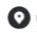

 India
Can't tell
editoratomic022@gmail.com
I am a passionate and motivated undergraduate student at IIIT Una with a strong interest in technology, programming, and innovation. I enjoy working on hands-on projects, especially in areas like embedded systems, web development, and machine learning. I’m an active member of the AAVESH club, constantly seeking to expand my knowledge through collaboration, creativity, and problem-solving. My goal is to contribute to impactful tech solutions while continuing to grow as a developer and learner.
IIIT Una | 2023 – Present
Participated in organizing and developing electronics-based projects and workshops. Contributed to team discussions and hands-on work on embedded system projects.
IIIT Una | Oct 2024
Gained hands-on experience in building web pages using HTML, CSS, and JavaScript. Created a basic interactive webpage as part of the workshop project.
2021 - Present
Created my own youtube channel in 2021 and done video editing for my channel's video. Gained extra experience by doing video editing my clubs.
Bachelor of Technology (B.Tech) in Electronics and Communication Engineering
Expected Graduation: 2027
Relevant Coursework: Embedded Systems, C Programming, Machine Learning, Web Development
Club Activities: Active member of AAVESH (Electronics Club)
CBSE Board | Year of Completion: 2023
Stream: Science with Mathematics
XII percentage: 86%
X percentage: 88%